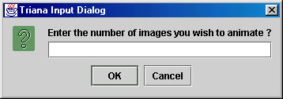

Output Types : TrianaImage
Date : 14 September 1999
The SeqMovie is a unit which imports a set of GIF (or JPEG) files. This unit loads the images one by one. Use for long or continuous streams of images. For smaller animation sequences use LoadMovie.
To load in the JPEG or GIF files, control double-click the unit's icon. The unit then prompts you with a file dialog box. Use this file dialog to choose the first GIF (or JPEG) file in the series that you want to animate. The series of files must have a number appended to its name e.g. to load in 10 images which, say, animates a walk, the files would be named as follows:
Therefore, you would choose walk1.gif in the file dialog then you are prompted with the following screen:

Here, specify 10 since you have 10 images to animate.
This unit can be used along with the Pause and MovieView. unit to create and animate a set of image files. To do this, set the MainTriana in continuous mode (by changing the choice widget at the bottom left hand-side of the MainTriana) and hit the Start button.